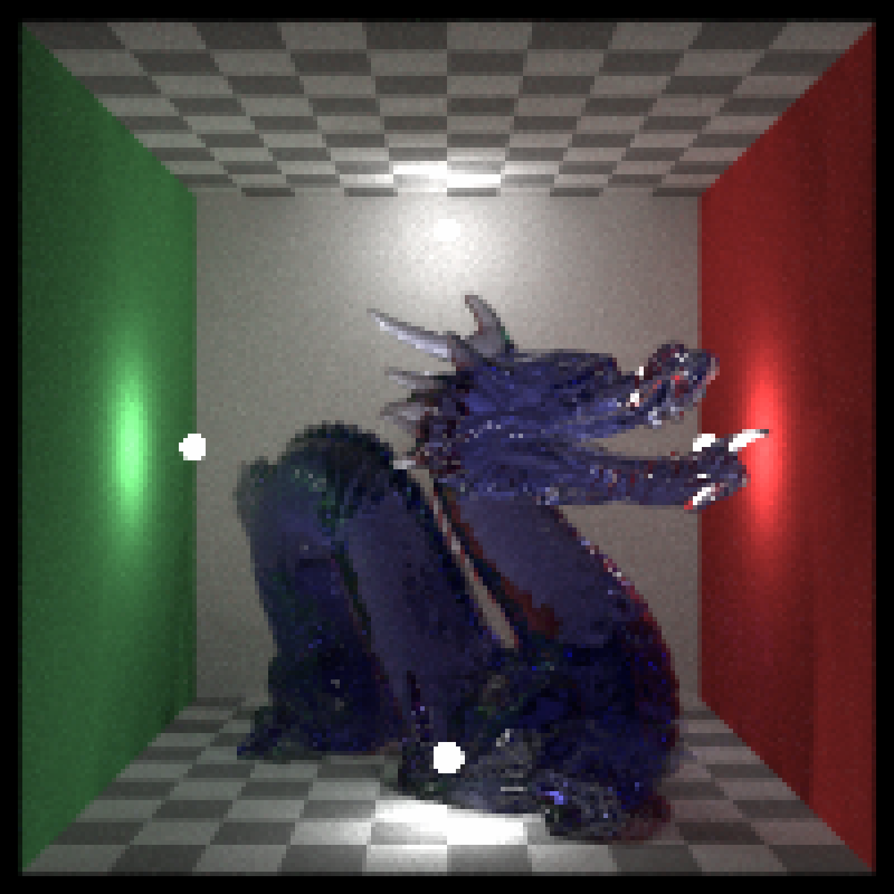
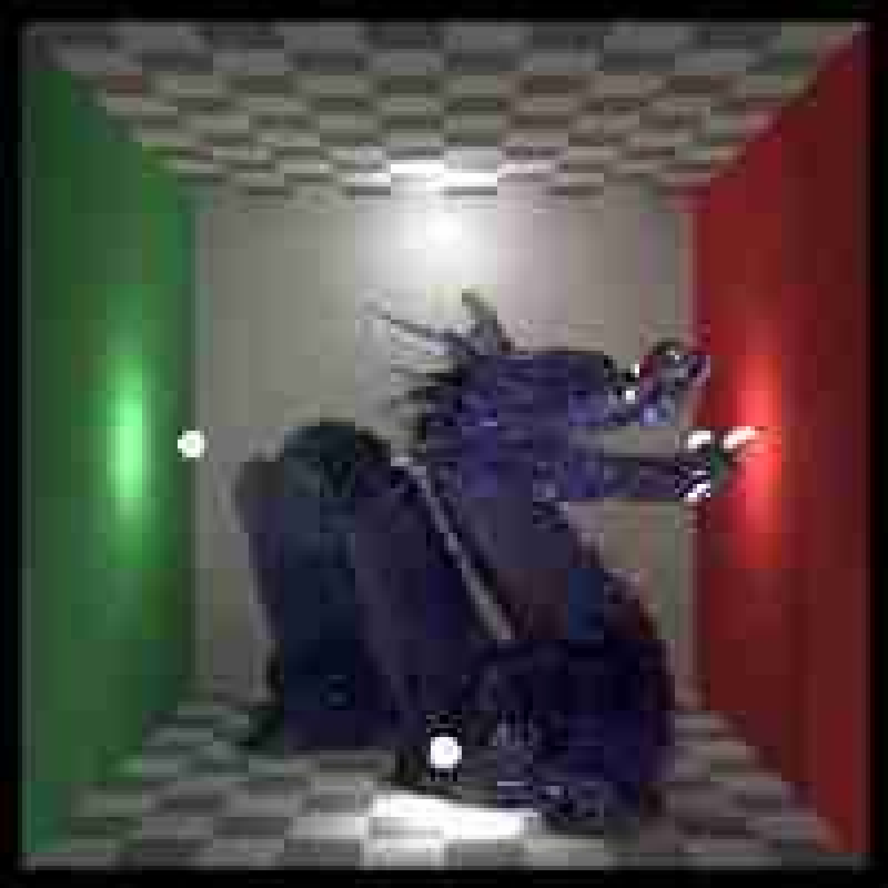

Takes an RGB array/filename and writes it to file.
ray_write_image(image, filename, clamp = FALSE, write_linear = NA, ...)Arguments
- image
3-layer RGB/4-layer RGBA array,
rayimgclass, or filename of an image.- filename
File to write to, with filetype determined by extension. Filetype can be
PNG,JPEG,TIFF, orEXR.- clamp
Default
FALSE, automatically determined. Whether to clamp the image to 0-1. If the file extension isPNGofJPEG, this is forced toTRUE.- write_linear
Default
NA, automatically determined. By default, images will be gamma corrected (write_linear = FALSE) for all file types exceptEXR(which is a linear format), unless otherwise specified.- ...
Arguments to pass to either
jpeg::writeJPEG,png::writePNG,libopenexr::write_exr, ortiff::writeTIFF.
Value
A rayimg RGBA array.
Examples
if(run_documentation()){
#Write as a png
tmparr = tempfile(fileext=".png")
ray_read_image(dragon) |>
ray_write_image(tmparr)
ray_read_image(tmparr) |>
plot_image()
}

if(run_documentation()){
#Write as a JPEG (passing quality arguments via ...)
tmparr = tempfile(fileext=".jpg")
ray_read_image(dragon) |>
ray_write_image(tmparr, quality = 0.2)
ray_read_image(tmparr) |>
plot_image()
}
#> Warning: JPEG decompression: Caution: quantization tables are too coarse for baseline JPEG

if(run_documentation()){
#Write as a tiff
tmparr = tempfile(fileext=".tiff")
ray_read_image(dragon) |>
ray_write_image(tmparr)
ray_read_image(tmparr) |>
plot_image()
}
#> Warning: TIFFReadDirectory: Sum of Photometric type-related color channels and ExtraSamples doesn't match SamplesPerPixel. Defining non-color channels as ExtraSamples.